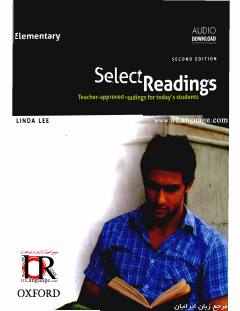

SRIngliz tilini o'rganuvchilar uchun mo'ljallangan qiziqarli matnlar va o'qish mashqlari to'plami.
Ushbu kitob ingliz tilini o'rganayotganlar uchun maxsus tanlangan qiziqarli matnlar va o'qish ko'nikmalarini rivojlantiruvchi mashqlarni o'z ichiga oladi. O'quvchilarning lug'at boyligini oshirish va matnni tushunish qobiliyatini yaxshilashga qaratilgan ushbu darslik xalqaro standartlarga mos keladi.